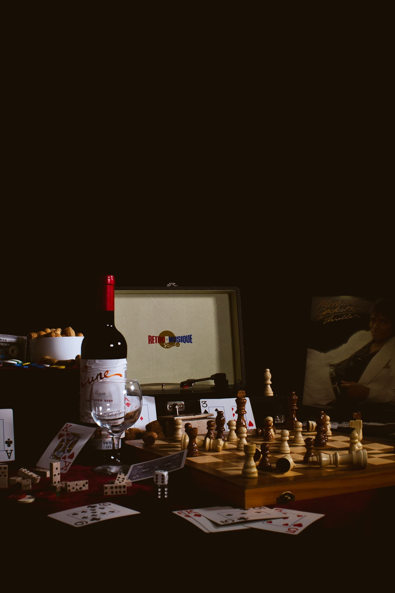
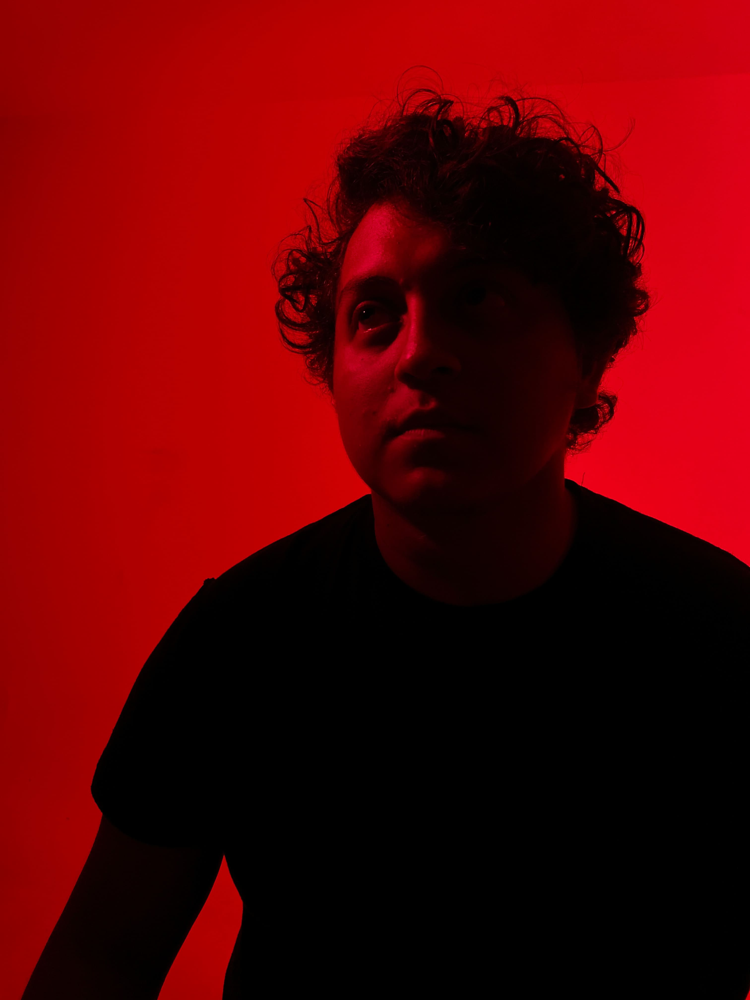

Photography
This selection showcases work that bridges both commercial and expressive photography. On one hand, it features carefully composed product shots that highlight visual qualities, material details, and functional aspects.
On the other, it includes artistic pieces that aim to convey emotion, concepts, and visual storytelling.

